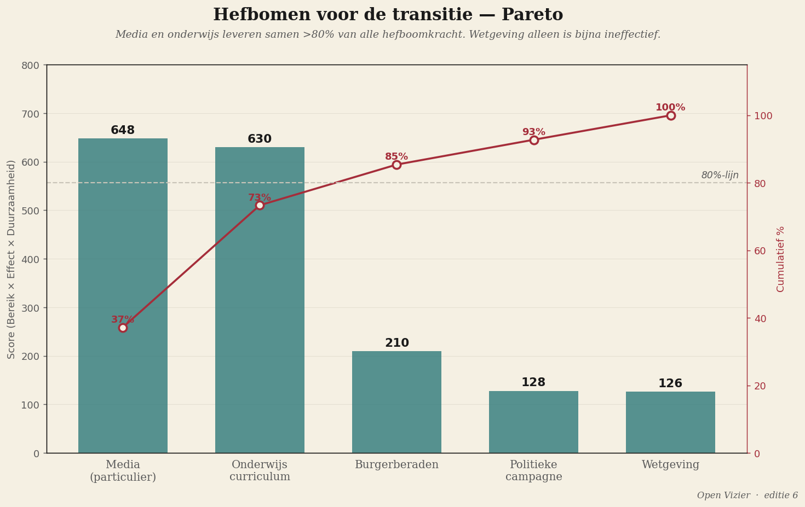

Nella scienza delle costruzioni si distinguono ordini di resistenza. Un carico di primo ordine provoca deformazione elastica: la struttura torna alla forma originale non appena il carico viene rimosso. Un carico di secondo ordine provoca deformazione plastica: rimane una deviazione permanente, ma la struttura resta in piedi. Un carico di terzo ordine si avvicina al limite di cedimento: instabilità, rottura, collasso. Nell'acciaio si progetta una struttura in modo che il carico di lavoro resti sempre ben sotto il limite elastico, con un fattore di sicurezza da uno e mezzo a due.

L'attuale democrazia olandese si trova profondamente nel secondo ordine. Deformazione plastica permanente — pubblica amministrazione in crescita, legislazione sempre più intasata, fiducia in calo — ma non ancora ceduta. Una stima approssimativa del fattore di sicurezza: circa uno virgola uno. Praticamente nessun margine.
Il diagramma strutturale
I media sono l'estensimetro
Una struttura senza estensimetri non si misura; si sa solo che è ceduta quando è già a terra. Gli attuali media olandesi misurano esclusivamente eventi di primo ordine — ampiezza dello scandalo, esito dei sondaggi d'opinione. Nessuna isteresi, nessuna fatica, nessuna riserva di instabilità. Ciò che manca è la sorveglianza strutturale del portante stesso.
Un media di Nova Democratia fa ciò che fa un ingegnere con un ponte: misurare continuamente invece di reagire occasionalmente; tenere una storia dei carichi; pubblicare la capacità di riserva. Non più giornalismo critico, ma misurazione dell'integrità strutturale. È operativamente un mestiere diverso.
Leve per la transizione — un Pareto
Media e istruzione insieme ottengono un punteggio superiore all'ottanta percento di tutta la forza di leva. Media seicentoquarantotto, istruzione seicentotrenta. La sola legislazione ottiene centoventisei — senza la leva mediatica ogni legge resta simbolica. La campagna politica ottiene centoventotto: rapida, ma troppo breve per cambiare il pensiero. I consigli civici duecentodieci: effetto forte, ma portata troppo limitata.
I media ottengono un punteggio superiore all'istruzione su un punto cruciale: la velocità. L'istruzione lavora su una generazione scolastica, dieci anni o più. I media su un ciclo di notizie, dieci giorni. Per una transizione che deve iniziare entro una generazione politica, i media non sono quindi solo la base — sono l'unica leva con punteggio sufficiente e velocità sufficiente.
La legislazione senza i media è simbolica. L'istruzione senza i media funziona troppo lentamente. I media senza gli altri due sono vuoti. Ma senza i media nulla funziona.
Fase meno uno — infrastruttura cognitiva
Prima di tutte le fasi precedentemente menzionate deve svolgersi una fase meno uno: il pubblico impara a leggere gli indicatori strutturali. Non tramite l'educazione, ma tramite la ripetizione costante nei media propri — openvizier, novademocratia, e canali privati affini. Tre indicatori sono centrali: isteresi (formare coalizioni sempre più costose, formazioni sempre più lunghe), rottura per fatica (perdita di fiducia che nessun singolo incidente spiega), e limite di instabilità (collasso di legittimità senza crisi precedente).
Solo quando il trenta percento degli intervistati nei sondaggi pubblici usa spontaneamente termini strutturali inizia la fase zero. Non prima. È la soglia autoimposta che impedisce che tutta la ristrutturazione inizi su un terreno sbagliato.
Open Vizier · novademocratia.com · Materiale di lavoro · Jacobus van Merksteijn · Giugno 2026